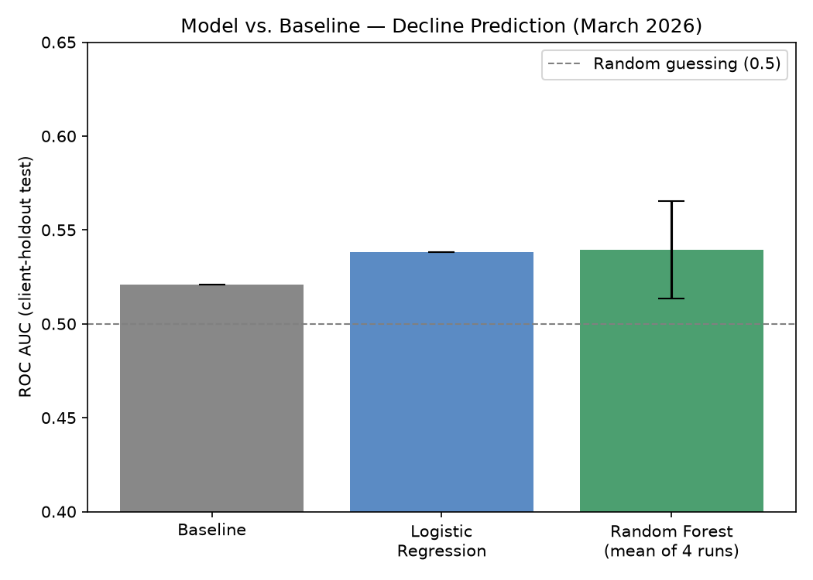
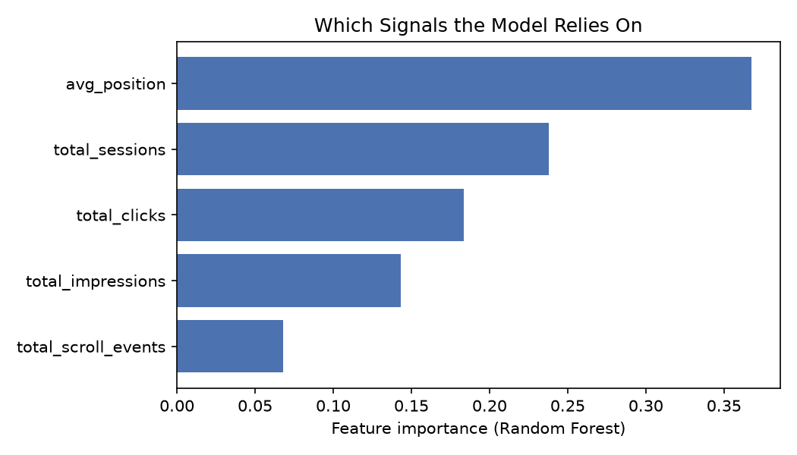
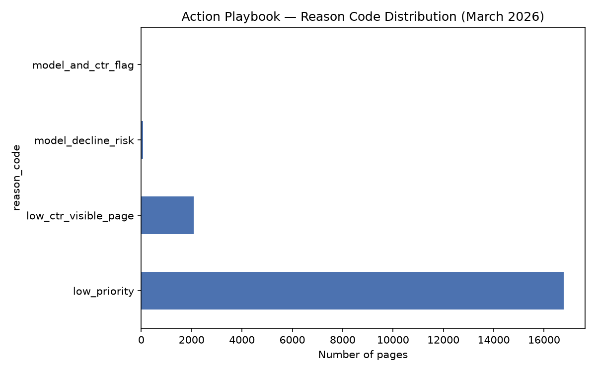

This study asks which observable search and content signals — impressions, click-through rate, average position, session volume, and scroll engagement — are associated with a page's short-term traffic trend. Using a client-holdout-validated classification approach on 176,738 content items from FlyRank's pseudonymized warehouse (March 2026), I compared a transparent baseline rule against a Random Forest classifier. The model showed only a small, unstable improvement over the baseline (ROC AUC 0.51–0.58 across four runs, mean 0.539, versus 0.52 for the baseline), indicating these five signals carry weak information about within-month decline. The strongest confirmed finding was a directional CTR-position relationship, while staleness and search-volume ("quick win") assumptions showed weak or opposite-than-expected effects. The result is a modest, transparent action playbook for content review prioritization — offered as decision-support, not a proven predictive system.
FlyRank helps client websites stay visible in Google search results. With portfolios spanning hundreds of thousands of pages per client, content teams cannot manually review every page to catch declining performance — they need a way to prioritize limited review time toward the pages most likely to need attention.
This is the real content problem this study addresses: which safe content and
search signals are associated with a page's visibility, clicks, engagement, or trend
movement? The goal is not to build a black-box predictor, but to test whether
a learned, evidence-based ranking can improve on — or at least meaningfully inform — a
hand-written rule-based flag like FlyRank's own low_ctr_visible_page.
The intended user is a content editor or SEO reviewer deciding where to spend limited review time. The cost of getting this wrong runs in both directions: false positives waste reviewer time on pages that aren't real problems, and false negatives let a real decline go unnoticed because a signal was dismissed as noise. Both costs compound across a portfolio this large, which is why prioritization, not manual review, is the actual product this analysis supports.
Release: FlyRank ML Internship warehouse
(FlyRank/internship-warehouse on Hugging Face), accessed via DuckDB over
Parquet files.
Tables used: fact_content_daily_performance (daily grain:
report date × client × content item) as the source for all model features and the
label; dim_content was consulted only during the leakage audit, not used
in the final feature set (see Methodology).
Date window: March 2026 (2026-03-01 to 2026-03-31) — a mid-panel month chosen deliberately over the release's final month, which serves as a sealed test window in the source data and the natural "future" outcome window for any past→future label.
Scope: 176,738 content items across roughly 47–55 clients, filtered to rows where GSC data was confirmed available.
Public-safety note: no client names, URLs, page titles, or raw search queries appear anywhere in this analysis — only hashed identifiers, aggregated numeric signals, and categorical metadata.
Task framing: binary classification — predict whether a content item's trend is declining within the observation window — used as a discovery tool rather than an end goal. The value is in which signals the classifier relies on, not the classification itself.
Label (proxy, not a true forward-looking outcome): a content item is labeled "declining" if its GSC impressions in the second half of March are lower than in the first half. This is a within-month proxy, not a genuine past→future label — its own weakness is one of this study's key limitations.
Features (5, all knowable within the window): total impressions, total clicks, average position, total sessions, and total scroll events — all aggregated per content item from daily rows within the March window. No content-metadata fields are used in the final model, for the leakage reasons described above.
Baseline (transparent rule): a page is flagged when it has at least 500 impressions, ranks between position 1 and 20, and has a click-through rate below 0.5%. This mirrors FlyRank's own optimization-flag pattern and is tested directly against the assumption it's built on, rather than trusted at face value.
Model: Random Forest (200 trees, max depth 8), compared against logistic regression as a linear baseline — chosen because the research question concerns combinations of signals, not single thresholds.
Validation design: client-holdout split (~20% of clients held out entirely), not a random row split. Pages from the same client likely share structural traits, so a row-level split risks letting a model partially memorize client-specific patterns. A direct before/after test confirmed this matters: a naive row split reported AUC 0.605 versus 0.547 for a client-holdout split on the same data — a 0.058-point inflation from the weaker design.
Leakage checks performed: confirmed all feature data falls within the March window; found and removed content-metadata fields after confirming most had been updated after the window closed; and ran a deliberate-leak test, where adding a label-derived column directly as a feature raised AUC from ~0.55 (honest) to 0.875–1.0 across two separate tests — confirming the pipeline is sensitive enough to detect leakage when deliberately introduced, and that the final feature set avoids it.
| Method | ROC AUC | Notes |
|---|---|---|
| Baseline (rule-based flag) | 0.521 | Single run, transparent threshold rule |
| Logistic Regression | 0.538 | Single run, linear model |
| Random Forest | 0.539 ± 0.026 | Mean ± std across 4 client-holdout runs; range 0.505–0.576 |

Random Forest shows a small average improvement over both the baseline (+0.018) and logistic regression (+0.001), but the improvement is neither large nor stable: across four separate client-holdout runs, AUC ranged from 0.505 (statistically indistinguishable from random guessing) to 0.576. With only 47–55 clients in this slice, the holdout sample is small enough that which clients happen to be excluded meaningfully shifts the measured performance — this variance is itself an important, honest result, not noise to average away.

What this means: the five signals tested carry weak and unstable information about within-month decline. Random Forest usually — but not reliably — edges out a single-threshold rule, supporting the general argument that signal combinations matter more than individual thresholds, without supporting a strong claim that this specific model is a dependable replacement for the baseline rule.
The final playbook score blends the model's probability (70%) with the transparent rule-based flag (30%), keeping an inspectable rule as a component rather than relying on the model alone.
| Reason code | Meaning | Action |
|---|---|---|
| Model + rule agree | Both signals flag the page | Review title/meta and refresh |
| Model only | Model alone flags decline risk | Review for refresh (low confidence) |
| Rule only | CTR rule flags a visibility/click gap | Review title/meta |
| Neither | No condition met | Monitor |

All code, notebooks, and the full weekly progression behind this study are available in the project repository:
work/outputs/playbook_metrics.json — the numeric receipts this paper's figures trace back toAll results were produced with a fixed random seed for the train/holdout client split (varied only intentionally across repeated runs to test stability) and a fixed model configuration (Random Forest, 200 trees, max depth 8).
Built on the FlyRank ML Internship dataset. Learn more at flyrank.ai.